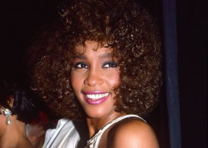

Whitney Houston

Influenciada por Chaka Khan y Aretha Franklin.
Whitney Houston es de esas estrellas que, pese a brillar con mucha intensidad en los 80 y 90, sus problemas con las drogas y su vida personal acabaron por atenuar y languidecer su luz. Esa luz ahora ha dejado definitivamente de brillar trás la noticia sobrecogedora de su muerte con tan sólo 48 años. Un inexperado adios para una artista que poseyó un bello y portentoso registro vocal, un auténtico regalo en la década de los 80 y 90, perfectamente armonizado para conseguir interpretaciones magistrales, capaz de alcanzar notas fascinantemente agudas y que la llevó a ser conocida como "The voice -La voz-". Su disco debut fue esa puerta abierta que se abrió de par en par mostrando una joven dispuesta a comerse el mundo, grandes baladas pop/soul, junto a temas más dance que consiguieron gran éxito comercial y el ascenso imparable de una joven de 22 años a diva. Fue el debut más éxitoso de una artista femenina, un arranque sólo frenado con la entrada de este nuevo siglo y su tortuosa vida personal que la hizo quedar atrapada en las fauces de las drogas.
Sus nuevos intentos en el pasado 2009 de retomar las riendas de su vida y su carrera muisical no alcanzó las expectativas deseadas. Su voz ya no brillaba a la misma altura, y tantos años desconectada de la realidad pasan factura. Aun así, en su futuro estaba el retorno como actriz en una nueva película, "Sparkle", y su participación en su banda sonora con the "Eyes on the Sparrow", un gospel clásico, y "Celebrate", una nueva canción compuesta por R. Kelly que suena en los créditos finales. Un futuro truncado una vez más de forma prematura y sin avisar, con una estrella que posó sus pies sobre arenas movedizas apagando su brillo. Una carrera meteórica que la llevó a lo más alto, como se puede ver reflejado en esos primeros años de carrera musical llenos de vitalidad con canciones como "I Wanna Dance with Somebody (Who Loves Me)", todo un número 1 en prácticamente todo el planeta, u otras muchas que la consagraron como una de los grandes talentos de la música.
I Wanna Dance with Somebody (Who Loves Me)
videos.videomusica.es ® is a registered trademark. All content © 2016-2026 by izugarria.
Todos los contenidos del portal incluyendo, imágenes, vídeo, nombres, marcas y logos, son propiedad de sus respectivos dueños.